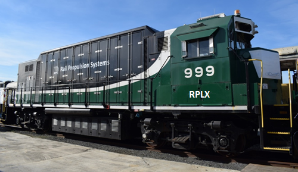
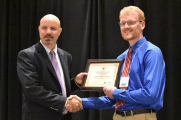

Click here to read the article in Railway Age!
Rail Propulsions Systems, LLC, (RPS) of Fullerton, Calif., has successfully restored and recycled locomotive 999, an early zero-emission battery prototype which was developed by NS more than 10 years ago to be a road switcher but did not meet the requirements and the project was abandoned.
RPS recently acquired 999 and has installed its power control systems and other upgrades, which aim to enable 999 to be productively employed in southern California’s Los Angeles Basin. Although improved in recent years, the air quality in the L.A. Basin is still the worst in the country, and diesel engines are a major source of air pollutants. RPS’s philosophy is to modernize and recycle existing railroad locomotives.


The 12th annual North Carolina Mobile Clean Air Renewable Energy (CARE) and NC Smart Fleet award winners were announced on Aug. 23 at the 2018 Sustainable Fleet Technology Conference & Expo held at the Durham Convention Center. Award winners were recognized for their commitment and accomplishments in reducing petroleum use, thus reducing CO2 emissions and other harmful emissions, and for their fleet sustainability practices.The NCDOT Rail Division received a Smart Fleet Champion award for their emissions reduction accomplishments on the NCDOT Piedmont locomotive fleet using a retrofitted selective catalytic reduction system, known as Blended After-Treatment System (BATS). The BATS system treats locomotive engine exhaust with diesel exhaust fluid prior to its release into the environment, significantly reducing the emissions to a level that is compliant with, and in some cases better than the EPA’s most stringent requirements for air pollution. The system was EPA certified in February.
The Rail Division’s Mechanical Engineering Team, McDowell Engineers & Associates, developed this system in conjunction with Rail Propulsion Systems of Fullerton, CA. The team has been working on this technology since Summer 2015 and hopes to achieve fleetwide implementation within the next few years.
This is the first year that the NCDOT Rail Division has received this prestigious award. NC Smart Fleet Champion award winners also included BuildSense, City of Charlotte, City of Durham, Epes Transport System LLC, Orange County, Town of Cary, and UNC Charlotte.
NC Smart Fleet Leader Award winners included Charlotte Mecklenburg Schools, City of Winston-Salem, Durham City Transit Company, Gaston County and GoTriangle.
The awards are given by the N.C. Clean Energy Technology Center with support from the N.C. Department of Transportation.
OC Register
Susan Carpenter / Staff Writer
The locomotive that arrived at the Anaheim rail yard earlier this year, a workhorse of North Carolina’s passenger rail service, has seen better days. Its green paint is smeared with soot. Its enormous diesel fuel tank is coated with grime from feeding the 3,000-horsepower engine that has pulled its 260,000-pound body and a train of six passenger cars for 27 years…
Click Here to read the OC Register story featuring us.